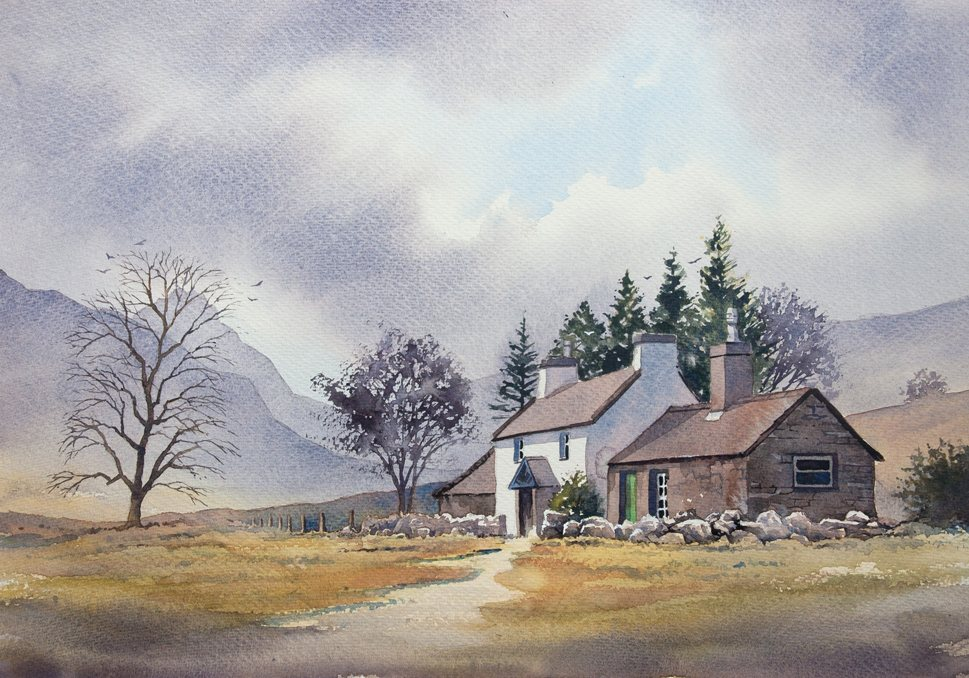
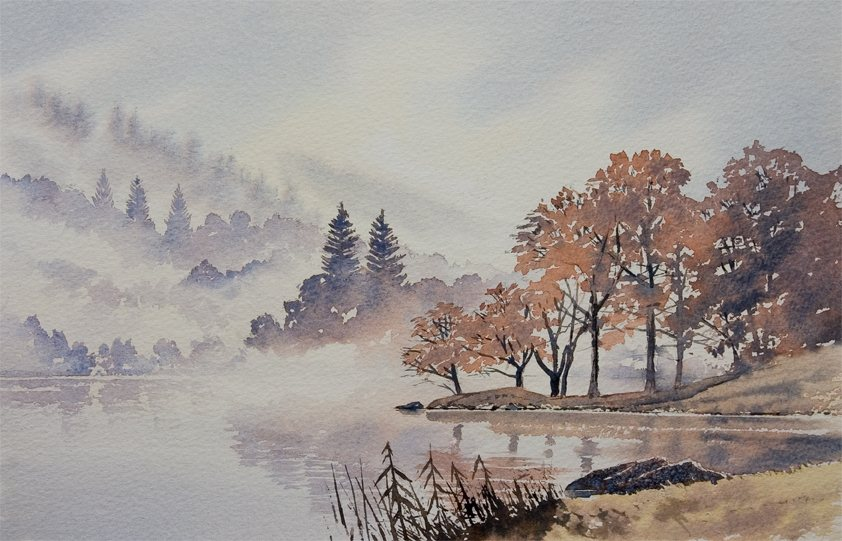
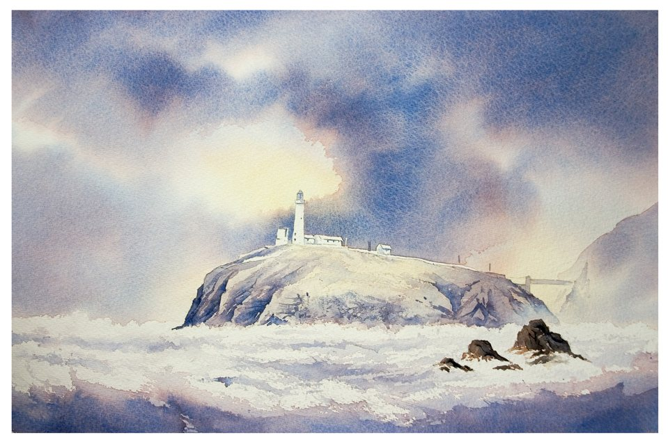

Commissions
A favourite mountain, a view from a holiday, the place you got engaged — I can paint the scene that means something to you, as a one-of-a-kind original watercolour.
How it works
Get in touch
Tell me about the scene you have in mind and send any photos you have. There’s no obligation.
Agree the details
We’ll agree the view, the size and the price together, and I’ll let you know when it will be ready.
Your painting
I paint your original watercolour by hand, then arrange getting it to you.
Original watercolours from £300
The final price depends on the size and detail of the painting.
How long it takes
Most commissions are finished within a week or two. A new scene I haven’t painted before can take a little longer. If you’d like a painting like one already in the gallery, it’s usually quicker.
What to send
- Reference photos of the scene. Several angles help, and they don’t need to be good photos.
- The size you’d like, or where the painting will hang.
- The occasion and any deadline, such as a birthday, anniversary, wedding or retirement.
Past work



Have a scene in mind? I’d love to hear about it.
Ask me about a commission